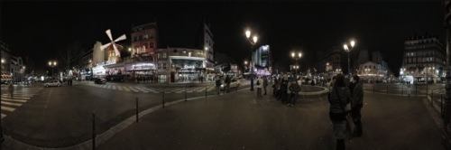

Mon, 24 Jan 2011 11:31:00 · photography · travel · architecture
Fantastic Panoramic Photography by Oliver Mauder
German photographer, Oliver Mauder, created his own version of the world through sets of panoramic photography. Furthermore, by using Quick Time VR Works, we can also delve deeper into his striking panoramic shots for closer look.

Check out more here.